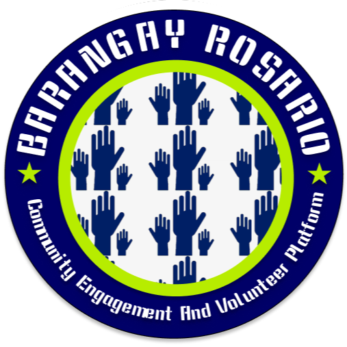

Barangay Rosario
Community Engagement And Volunteer Platform
Omega 1 Subdivision, 25 A Bonifacio St, Rodriguez, 1860 Rizal
Community/Organization
A non-profit organization called Barangay Rosario Community Engagement and Volunteer Platform organizes volunteer work for the barangay community in order to assist and maintain environmental cleanliness. Upon joining the organization, volunteers will receive a certificate of completion.
Programs
Our three categories are [CLEANUP DRIVE], [PLANTING TREE], and [BLOOD DONATION]. With the help of the volunteers that joined our organization, we will host events or activities in our barangay. The cleanup drive's schedule, which includes blood donation and tree planting, will be announced by the administrator.
Interested to Join?
We appreciate your interest in joining our community group to assist clean up our barangay rosario, and you may do so by filling out the form on our website. Thank you. Click
Let me ask you some Question..
What do you know about our organization?
Why do you want to volunteer with us?
Do you agree with our mission?
How did you hear about our program?
What has been your favorite part of being a volunteer?
